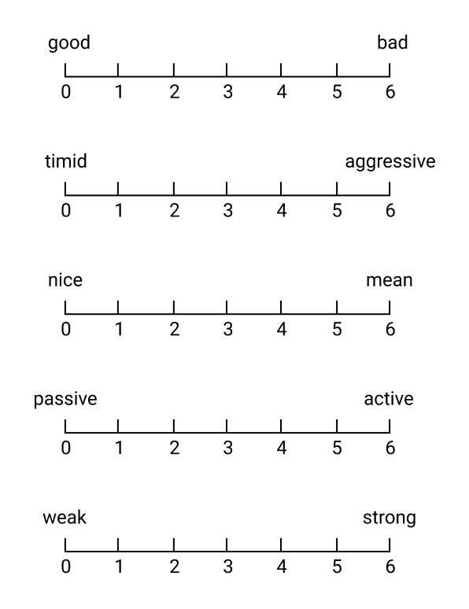
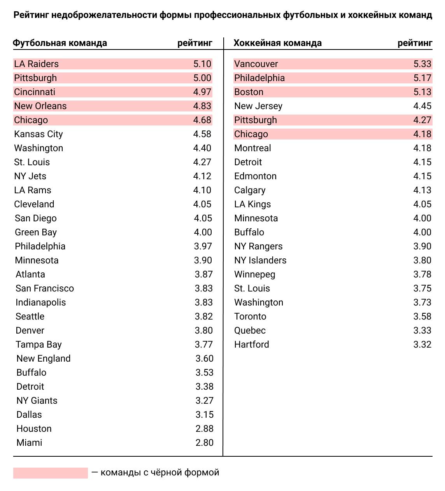
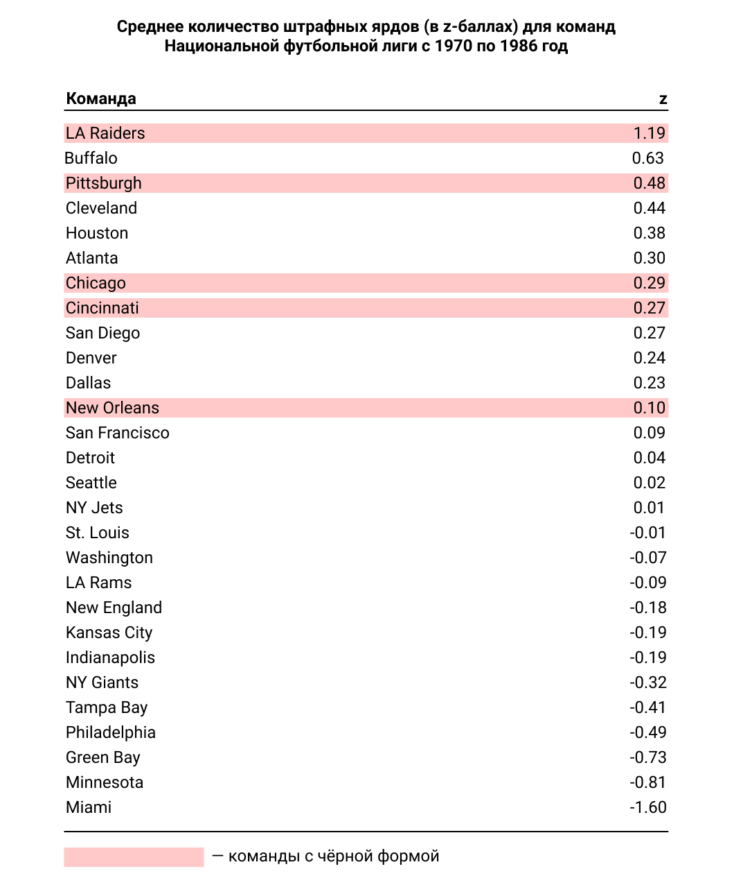
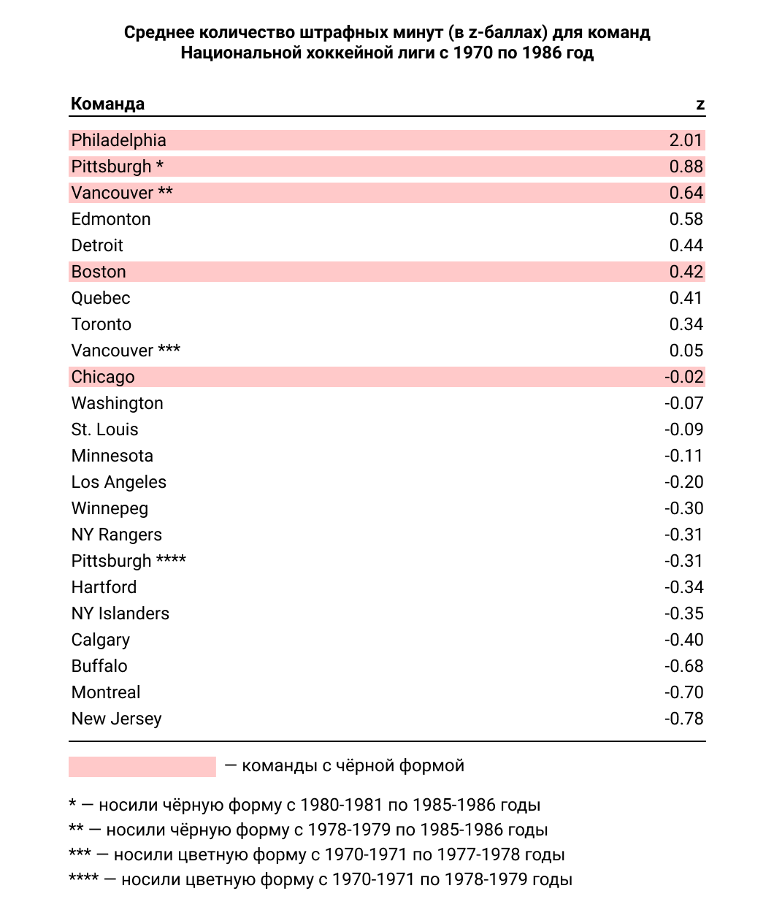
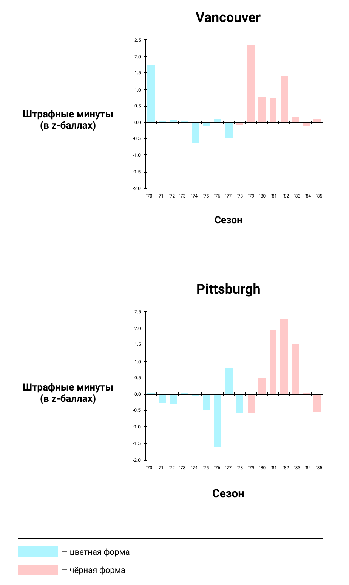
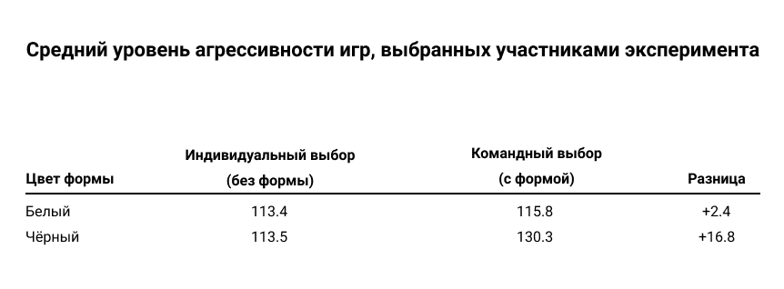

С чего всё началось?
Mark Frank и Thomas Gilovich заметили, что в большинстве культур, чёрный цвет является цветом зла и смерти. Им стало интересно — может ли такой параметр,
как цвет одежды, влиять на поведение человека. Было решено провести исследование профессиональных футбольных и хоккейных матчей. Нужно было понять — как относятся зрители и судьи к игрокам в чёрной форме и отличается ли поведение игроков в чёрном, от поведения игроков любого другого цвета формы.Люди с улицы оценивают униформу спортивных команд
Так как спортивная форма — это гораздо более сложная штука, чем образец цвета, необходимо определить — влияют ли общие ассоциации людей к определённым цветам на
их восприятие формы. Чтобы получить такую информацию было собрано 25 испытуемых. Они были не знакомы с футболом или хоккеем, они не знали правил и команд. Опрос именно таких людей гарантировал, что испытуемые при выборе ответов руководствовались только характеристиками самой формы, а не своим отношением к командам. Каждому дали по 2 доллара и предложили пройти тест. Участники эксперимента (22 женщины и 3 мужчины) были поделены на 2 группы: 15 в одной и 10 в другой. Им показывались слайды с изображениями формы всех команд НФЛ и НХЛ. На слайдах были показаны: майки, брюки, носки и шлемы каждой команды. Сами игроки, а также отсылки к домашним городам команд были удалены с фотографий. Слайды показывались на 30 секунд (всего 25 минут на одного человека), за это время испытуемые должны были оценить форму команды по 5 параметрам: good/bad, timid/aggressive, nice/mean, passive/active, weak/strong. На основе ответов испытуемых, по трём основным параметрам: good/bad, timid/aggressive, nice/mean, был сформирован рейтинг недоброжелательности формы
профессиональных футбольных и хоккейных команд. Команда считалась носителем чёрной формы, если 50 или более процентов элементов её формы были чёрными. Команды с чёрной униформой находятся в топе рейтинга, как в футболе, так и в хоккее. Это чёткое доказательство того, что черная форма, которую носят команды,
для людей выглядит более злобной, чем любая другая.Анализ отчётов о штрафах в НФЛ и НХЛ или почему игрокам лучше не появляться
в чёрном в профессиональных матчахСтатистика штрафов в играх НФЛ и НХЛ была получена из официальных матчей, проводившихся в период с 1970 по 1986 года. А для сравнения команд были
созданы z-баллы. Z — это относительный показатель количества штрафных, полученных за наш период.Национальная футбольная лига
Основной способ наказания в американском футболе — это ярды. Для нападения таким способом увеличивается дистанция, которую нужно пройти.
Для защиты — напротив, уменьшается. Национальная хоккейная лига
В хоккее все наказания требуют от игрока, совершившего нарушение, отсидеть часть игры, в течение которой его команда уступает по численности
команде соперника. В зависимости от серьёзности нарушения игроки отсиживаются по 2, 5 или 10 минут. В таблице видно, что есть 2 команды, которые продублированы, как носящие и не носящие чёрную форму — команды Vancouver и Pittsburgh.
В определённый момент обе команды перешли на чёрный и стали получать значительно больше штрафов, чем до смены цвета. Визуализацию этого перехода можно посмотреть на следующих графиках. Информация из представленных отчётов показывает, что между цветом формы профессиональных игроков и кол-вом их штрафов, есть связь.
Есть несколько объяснений этому. Первое — это то, что судьи так же, как и все остальные люди воспринимают чёрный цвет, как более злобный, поэтому абсолютно обычные действия игроков в чёрном они могли посчитать за чрезмерно агрессивные и оштрафовать. Второе объяснение говорит о том, что возможно руководства этих команд сами приказывают игрокам вести себя более агрессивно, полагая, что это повысит их шансы на победу.Участники эксперимента в роли судей чаще выдавали штрафы игрокам в чёрном
Для того чтобы определить — могут ли данные о штрафах, описанные выше, быть результатом предвзятого отношения рефери,
авторы исследования собрали испытуемых и попросили их посмотреть записи постановочного футбольного матча, в котором команда защиты была одета в чёрную или белую форму. После просмотра записей, нужно было судить игроков. Испытуемыми являлись: 40 студентов, разбирающихся в футболе, и 20 судей футбольных матчей колледжей и старших классов (с опытом 8-35 лет в судействе). Им были показаны две записи: в одной команда защиты носила чёрную или белую форму (атакующая команда в обоих случаях была одета в красную форму), во второй было тоже самое, но сама запись была чёрно-белой. Все игры была поставлены таким образом, чтобы действия обороняющейся команды находились на грани соблюдения правил игры. Перед просмотром записей участникам эксперимента проигрывалась следующая инструкция:- Вам будет показан первый матч только один раз и в замедленном темпе.
- Затем видеопленка будет остановлена, и вы заполните анкету, касающуюся матча, свидетелем которого вы только что стали.
- После того, как вы заполнили анкету, процедура будет повторена для второго матча, а затем вам будет предложена последняя анкета для заполнения.
- Пожалуйста, сосредоточьтесь на команде защиты при просмотре видеозаписи.
В случае с цветной записью, студенты и профессиональные судьи сходились во мнении, что правила игры нарушали только игроки в чёрной форме.
Но в случае с лишённой цвета записью, когда форма всех игроков сменилась и стала невыразительно серой, участники эксперимента восприняли игру обеих команд, как одинаково агрессивную.Студенты, надев чёрную форму, выбрали более агрессивные виды спорта
В предыдущих исследованиях было выяснено, что люди автоматически воспринимают чёрную форму, как более зловещую, а поведение игроков,
находящихся в этой форме, как более агрессивное. Остаётся проверить одно — влияет ли чёрная форма на поведения самих носителей. Для этого снова было решено провести эксперимент с участием испытуемых. Ими были 72 парня, студенты из Корнельского университета. Они были разбиты на группы, так чтобы никто никого не знал. Все они думали, что участвуют в эксперименте по "психологии конкуренции". Группам говорили, что они будут соперничать с двумя другими в серии из пяти игр, которые сами и выберут. Выбирать они должны были из, предложенного им списка, состоящего из 12 видов спорта.В начале выбор был индивидуальным, каждый из участников выбирал игры сам, не советуясь ни с кем. После того, как испытуемый выбирал свои 5 игр, ему было необходимо поставить их в порядке убывания и передать одному из организаторов. Когда все члены команды составили свои списки — приходило время командного решения. Им выдавали чёрную или белую униформу и дальше давалось 5 минут на принятие решения. Основываясь на их выборах, получается, что участники эксперимента, одетые в форму чёрного цвета, отдавали предпочтения
более агрессивным играм. Таким образом, чёрная одежда влияет не только на восприятие, но и на поведение.Исследование проведённое Mark Frank и Thomas Gilovich показывает, как такой незначительный на первый взгляд фактор, как цвет униформы, может повлиять на личность человека.Итоги экспериментов вкратце
- Незнакомые со спортом люди оценили чёрную форму, как более зловещую.
- Игроки НФЛ и НХЛ получали больше штрафов, чем остальные, если были одеты в чёрную форму.
- Студенты и судьи во время просмотров записей постановочных матчей, выдавали больше штрафов игрокам в чёрном. В случае с чёрно-белой записью, действия всех игроков расценивались одинаково.
- Студенты, которые оделись в форму чёрного цвета, выбирали более агрессивные игры.